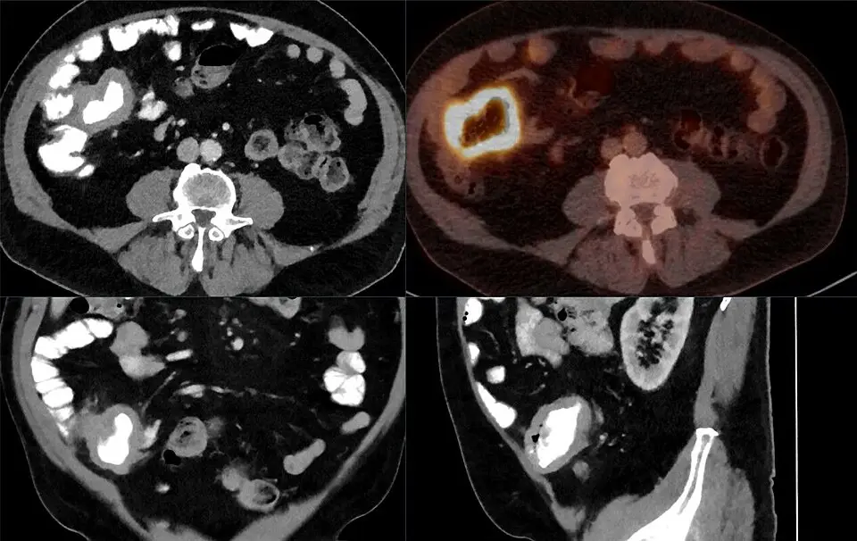

DX.8 — Néoplasie (cause de FUO)
1. Définition
La fièvre d'origine indéterminée (FUO)Elle désigne une maladie fébrile de 3 semaines ou plus, ou des épisodes répétés sur 3 semaines1. La température atteint au moins 38,3 °C, documentée deux fois1. Le patient n'est pas immunodéprimé. Aucun diagnostic n'apparaît après anamnèse, examen, laboratoire de base, radiographie du thorax et échographie abdominale.1 reste sans explication après un bilan de base. Une néoplasie en est l'une des quatre grandes causes, avec les infections, les maladies inflammatoires non infectieuses et les causes diverses.
La fièvre néoplasique est un syndrome paranéoplasique : la tumeur seule la provoque, sans infection4.
Notions voisines, à ne pas confondre : la neutropénie fébrile (DX.14)Fièvre chez un patient dont les neutrophiles sont bas, souvent après chimiothérapie. Elle sort de la définition du FUO et exige un traitement immédiat., les maladies inflammatoires non infectieuses (DX.5)Vascularites, polymyalgie, maladies auto-immunes, maladies granulomateuses. Elles forment 25 à 30 % des FUO dans les séries récentes d'Europe centrale, plus que les néoplasies1. et la fièvre prolongée sans cause (DX.4)Le FUO dont aucune cause n'est trouvée4. Il reste le groupe le plus grand et son pronostic est bon1..
2. Épidémiologie (Suisse, puis Europe)
Les séries d'Europe centrale citées dans un article suisse placent les néoplasies à 10 à 15 % des FUO (Karrer, 2017)1. Une étude prospective néerlandaise de 73 patients en trouve 7 % (Bleeker-Rovers, 2007)2. Les populations et les définitions diffèrent entre ces séries, ce qui explique l'écart. Le FUO néoplasique concerne surtout les adultes, et le coût du FDG-PET/CT et de la durée d'hospitalisation pèse sur l'organisation du bilan1.
| Cause du FUO | Part des FUO dans la série d'Europe centrale citée (Suisse, 2017) | Part des FUO dans l'étude néerlandaise (73 patients, 2007) |
|---|---|---|
| Infections | 10 à 20 %12 | 16 % |
| Néoplasies | 10 à 15 %12 | 7 % |
| Maladies inflammatoires non infectieuses | 25 à 30 %12 | 22 % |
| Causes diverses | 5 à 10 %12 | 4 % |
| Aucune cause trouvée | 30 à 50 %12 | 51 % |
| Indicateur | Chiffre observé dans cet indicateur (part du dénominateur ou nombre) | Dénominateur | Source |
|---|---|---|---|
| Mortalité à 6 mois dans une étude belge12 | 6,9 % | 436 patients | 1 |
| Mortalité quand une néoplasie cause le FUO | 38 % | patients dont une néoplasie cause le FUO | 1 |
| Mortalité quand une infection cause le FUO | 5,4 % | patients dont une infection cause le FUO | 1 |
| Mortalité quand une cause diverse explique le FUO | 4,7 % | patients dont une cause diverse explique le FUO | 1 |
| Mortalité quand une maladie inflammatoire cause le FUO | 1,9 % | patients dont une maladie inflammatoire cause le FUO | 1 |
| Nouveaux cas de cancer chez l'homme en Suisse, par année (2013–2017)1 | environ 23 100 hommes1 | hommes vivant en Suisse | 6 |
| Nouveaux cas de cancer chez la femme en Suisse, par année (2013–2017)6 | environ 19 650 femmes6 | femmes vivant en Suisse | 6 |
| Nouveaux cas de cancer estimés par l'OFS en 2021, hausse liée surtout au vieillissement6 | environ 48 000 cas6 | population résidente de la Suisse | 6 |
| Décès par cancer en Suisse, par année | environ 17 000 personnes6 | personnes décédées chaque année en Suisse | 6 |
| Part des décès par cancer chez l'homme | 30 % | décès masculins | 6 |
| Part des décès par cancer chez la femme | 23 % | décès féminins | 6 |
| Survie à 5 ans chez l'homme6 | 64 % | hommes atteints d'un cancer | 6 |
| Survie à 5 ans chez la femme6 | 67 % | femmes atteintes d'un cancer | 6 |
3. Physiopathologie
Cascade, de la tumeur au signe clinique.
• Amorce (niveau moléculaire). La tumeur ou les cellules immunitaires qui l'infiltrent libèrent des cytokines pyrogènes. La fièvre néoplasique est médiée par des cytokines, et son mécanisme précis reste mal compris4.
• Développement (niveau cellulaire). Ces cytokines agissent sur l'hypothalamus. Elles élèvent le seuil thermorégulateur, comme dans une infection, mais sans microbe. Ce schéma est le modèle classique de la fièvre.
• Installation (niveau tissulaire). Les tumeurs solides et lymphoïdes diffèrent. Le cancer du rein (« hypernéphrome ») et les lymphomes donnent classiquement des pics fébriles élevés. Les leucémies, les syndromes myéloprolifératifs et le myélome ne donnent habituellement pas de fièvre aiguë5.
• Maintien (niveau clinique). La fièvre dure tant que la tumeur produit les médiateurs. Elle peut précéder de plusieurs semaines tout autre signe de la tumeur. Un anti-inflammatoire non stéroïdien la fait céder : c'est la base du test au naproxène4,5.
Complications et pronostic. La mortalité de 38 % à 6 mois est le reflet de la maladie cancéreuse sous-jacente, non de la fièvre1. Un patient cancéreux fébrile garde un risque d'infection : il faut l'exclure avant de parler de fièvre néoplasique4.
Tableau de corrélation. Ce tableau relie chaque lésion à l'exploration qui la montre et à la thérapeutique qui la corrige.
| Lésion ou perturbation | Exploration qui la montre | Thérapeutique ou stratégie qui la corrige (mécanisme) |
|---|---|---|
| Masse tumorale, adénopathies profondes | FDG-PET/CT ; biopsie du site le plus accessible1,3 | Traitement oncologique selon l'histologie : il détruit la source des cytokines |
| Fièvre médiée par les cytokines | Température documentée ; test au naproxène4,5 | NaproxèneDCI : naproxène (Naproxen-Mepha, comprimés pelliculés de 250 et 500 mg, n° 51480). Classe : anti-inflammatoire non stéroïdien (ATC M01AE02). Groupe : dérivés de l'acide propionique ; chefs de file : naproxène, ibuprofène, kétoprofène. Indications (AIPS) : douleurs et inflammations de maladies rhumatismales, rhumatismes abarticulaires, douleurs postopératoires et post-traumatiques, crise de goutte, dysménorrhée ; l'AIPS ne prévoit pas l'indication de fièvre néoplasique. Posologie (AIPS) : adulte : 500 à 1000 mg par jour en entretien ; maximum 1250 mg par jour pour les douleurs postopératoires ; une ou deux prises espacées de 12 heures, aux repas. Contre-indications (AIPS) : ulcère ou hémorragie digestive, troisième trimestre de la grossesse, insuffisance hépatique ou cardiaque sévère, clairance de la créatinine inférieure à 30 ml/min, enfant de moins de 12 ans.10 : il bloque la synthèse des prostaglandines au niveau hypothalamique |
| Envahissement médullaire, cytopénies | Hémogramme avec différentiel, frottis ; électrophorèse des protéines ; biopsie médullaire en dernier recours1,2 | Traitement hématologique selon le diagnostic ; si neutropénie, voir DX.141 |
| Cancer du rein, tumeur hépatique ou abdominale | Échographie abdominale, puis scanner1 | Chirurgie ou traitement systémique selon la tumeur et le stade |
| Inflammation systémique (CRP, vitesse de sédimentation, LDH, ferritine) | Bilan de base du FUO | Elle oriente vers un diagnostic ; aucun traitement propre |
| Fièvre persistante, symptômes pénibles | Température, qualité de vie | ParacétamolDCI : paracétamol (Dafalgan®, n° 47503). Classe : analgésique et antipyrétique non opioïde (ATC N02BE01). Groupe : anilides ; chefs de file : paracétamol seul, association avec la codéine. Indications (AIPS) : douleurs légères à modérées ; fièvre. Posologie (AIPS) : adulte et plus de 40 kg : 500 à 1'000 mg par prise, intervalle de 4 à 8 heures, maximum 4 g par jour ; contre-indiqué en insuffisance hépatique sévère.11 ou naproxène : ils agissent sur le centre thermorégulateur |
4. Démarche diagnostique
Titre : néoplasie, cause de FUO. Le médecin objective d'abord la fièvre, exclut les urgences, puis suit un bilan structuré jusqu'à la biopsie. Pour la fièvre néoplasique, l'ordre des diagnostics suit la liste du plan ; il n'exprime aucune fréquence relative.
Étape 1 — Chercher les drapeaux rouges devant la fièvre néoplasique. Chaque drapeau est cliquable : sa fenêtre dit pourquoi il est rouge dans ce tableau.
| Drapeau rouge | Signe ou examen qui tranche | Piège classique | Conduite immédiate |
|---|---|---|---|
| 🚩 Instabilité hémodynamique ou sepsis (DX.11)Hypotension, tachycardie, confusion, lactate élevé. Un patient en danger reçoit un traitement empirique sans attendre le diagnostic de FUO, après prélèvements. | Constantes, lactate, hémocultures | Retarder l'antibiotique pour finir le bilan | Prélèvements, puis traitement empirique ; voir DX.11 |
| 🚩 Neutropénie ou immunodépression (DX.14)Neutropénie, VIH, déficit en immunoglobulines, corticoïdes à 10 mg d'équivalent prednisone par jour ou plus (seuil de Karrer1 ; AIPS de la prednisone12). Ces patients sortent de la définition du FUO. Leurs causes diffèrent et exigent une prise en charge plus agressive. | Hémogramme, test VIH, immunoglobulines | Traiter comme un FUO classique | Prise en charge urgente ; voir DX.14 |
| 🚩 Perte de poids, adénopathie, sueurs nocturnesCes signes orientent vers un lymphome ou une autre néoplasie. La perte de poids figure parmi les indices diagnostiques utiles dans une étude de 73 patients.2 | Poids mesuré, palpation de tous les territoires ganglionnaires, FDG-PET/CT | Banaliser une adénopathie persistante | Biopsie ganglionnaire sans délai ; avis d'hématologie |
| 🚩 Fièvre continue de moins de 180 jours avec inflammation, leucopénie ou thrombocytoseFièvre continue, durée inférieure à 180 jours, vitesse de sédimentation, CRP ou LDH élevées, leucopénie, thrombocytose, radiographie ou scanner du thorax anormal : ces éléments prédisent qu'un diagnostic sera trouvé2. | Hémogramme, LDH, CRP, imagerie du thorax | Attendre sans imagerie | FDG-PET/CT précoce |
| 🚩 Âge de 55 ans ou plus avec FUOLa biopsie de l'artère temporale est utile à partir de 55 ans : elle recherche une artérite, qui imite la néoplasie2. | Palpation des artères temporales ; vitesse de sédimentation | Oublier l'artérite à cellules géantes (DX.5)2 | Biopsie de l'artère temporale si doute |
Étape 2 — En l'absence de drapeau rouge, le médecin suit ces étapes.
1. Le médecin doit objectiver la fièvre : thermomètre, courbe, exclusion d'une fièvre factice1.
2. Il refait l'anamnèse et l'examen complet, plusieurs fois.
3. Il arrête ou remplace tous les médicaments, même ceux pris depuis des années.
4. Il fait le bilan de base : laboratoire, radiographie du thorax, échographie abdominale.
5. Il recherche les indices diagnostiques, puis il cible les examens sur eux1,3.
6. Sans indice, il fait un FDG-PET/CT.
7. Obtenir la biopsie du site suspect : elle pose le diagnostic de néoplasie.
5. Anamnèse ciblée et drapeaux rouges
| Question clé | Raison physiopathologique : pourquoi elle change la décision |
|---|---|
| Depuis quand la fièvre dure-t-elle, et sous quelle forme ?Le FUO exige 3 semaines ou plus, ou des épisodes répétés sur 3 semaines, avec 38,3 °C documentés deux fois2. Une fièvre continue et récente prédit un diagnostic.2 | La durée et le profil fixent la définition et la probabilité de trouver une cause. |
| Y a-t-il une perte de poids, une fatigue, des sueurs nocturnes ?La perte de poids, la faiblesse musculaire, les arthralgies et la dyspnée figurent parmi les indices utiles du FUO. | Les symptômes constitutionnels traduisent le catabolisme et l'inflammation d'une tumeur. |
| Quels antécédents de cancer ou de traitement immunosuppresseur ?Un cancer connu rend la rechute plausible, mais impose d'exclure d'abord une infection. Une immunosuppression exclut la définition classique du FUO.4 | Elle change la liste des diagnostics et l'agressivité du bilan. |
| Quels médicaments et drogues ?Les médicaments causent une fièvre dite médicamenteuse. L'arrêt ou le remplacement de tous les médicaments fait partie du bilan, même s'ils sont bien tolérés depuis des années. | Une fièvre médicamenteuse imite la fièvre néoplasique et disparaît à l'arrêt. |
| Quels voyages, expositions, animaux, contacts ?Voyages, travail, loisirs, animaux et contacts sexuels orientent vers une infection. | Une infection reste la première hypothèse alternative. |
| Quels antécédents familiaux et quelle origine ethnique ? | Les fièvres périodiques héréditaires ou une exposition infantile orientent vers d'autres causes1. |
| Y a-t-il des symptômes localisés (toux, douleur osseuse, hématurie, masse) ? | Un symptôme localisé guide l'examen vers un organe ; l'anamnèse reste la source de nombreux indices dans l'étude néerlandaise2. |
Drapeaux rouges actionnables.
• Instabilité, hypotension, confusion : urgence, prélèvements puis traitement empirique, voir DX.111.
• Neutropénie ou immunodépression : hospitalisation et prise en charge urgente, voir DX.141.
• Devant une perte de poids, une adénopathie ou une hépatosplénomégalie, le médecin fait une imagerie fonctionnelle, une biopsie et demande l'avis d'hématologie ou d'oncologie.
• Signe neurologique focal ou céphalée avec fièvre : exclure méningite et abcès, voir DX.121.
6. Examen physique ciblé, région par région
Pour la fièvre néoplasique, le médecin décrit d'abord le normal attendu, puis le pathologique. Il répète l'examen complet : une seule consultation ne suffit pas1. La valeur de ces signes reste qualitative, car elle repose sur le jugement clinique du médecin.
| Région | Normal attendu | Signes à rechercher (cliquer pour la technique, la valeur et le piège) |
|---|---|---|
| Général | Poids stable ; température inférieure à 38 °C hors épisode ; état général bon1. | Courbe de températureTechnique : mesurer la température plusieurs fois par jour, notée sur une courbe. Valeur : au moins 38,3 °C, documentés deux fois, définissent le FUO. Piège : une fièvre non mesurée par un soignant peut être factice. · PoidsTechnique : peser à chaque visite, même balance, vêtements légers. Valeur : une perte de poids oriente vers une néoplasie. Piège : un poids déclaré par le patient est peu fiable1. |
| Peau et muqueuses | Peau et muqueuses uniformes, sans nodule ni lésion. | Examen de toute la peau et des muqueusesTechnique : déshabiller le patient ; inspecter plis, cuir chevelu, ongles, bouche, périnée. Valeur : une lésion cutanée oriente vers une biopsie, car les anomalies de la peau figurent parmi les indices utiles. Piège : oublier les zones cachées. |
| Tête et cou | Dents saines ; pharynx normal ; sinus indolores ; artères temporales souples et pulsatiles. | Artères temporalesTechnique : palper les deux régions temporales, chercher un cordon dur, douloureux, sans pouls. Valeur : évoque une artérite à cellules géantes (DX.5) chez le patient de 55 ans ou plus. Piège : un examen normal n'exclut pas l'artérite.2 · Dents, pharynx, sinusTechnique : inspection au miroir, percussion des sinus. Valeur : chercher un foyer infectieux avant la néoplasie. Piège : un abcès dentaire passe inaperçu. |
| Ganglions | Aucun ganglion palpable, ou ganglions mous, mobiles, petits. | Toutes les stations ganglionnairesTechnique : palper cervicales, sus-claviculaires, axillaires, épitrochléennes, inguinales, en bilatéral. Valeur : un ganglion dur, fixe ou croissant impose la biopsie ; il évoque lymphome ou métastase. Piège : oublier les territoires profonds, visibles seulement à l'imagerie. |
| Thorax et cœur | Murmure vésiculaire symétrique ; bruits cardiaques réguliers sans souffle. | Auscultation pulmonaireTechnique : ausculter bases et sommets en inspiration profonde. Valeur : une auscultation anormale figure parmi les indices utiles ; elle fait faire une radiographie. Piège : une auscultation normale n'exclut pas une masse. · Souffle cardiaqueTechnique : ausculter les quatre foyers. Valeur : un souffle nouveau évoque une endocardite. Piège : le myxome auriculaire imite aussi cette présentation. |
| Abdomen | Souple, indolore ; foie et rate non palpables ; pas de masse. | Hépatomégalie, splénomégalieTechnique : palper le bord hépatique à l'inspiration, main droite sous le rebord ; palper la rate en décubitus latéral droit. Valeur : une organomégalie évoque lymphome, tumeur hépatique ou infection. Piège : un foie palpable peut être normal chez le sujet mince. · Masse lombaire ou abdominaleTechnique : palper les flancs et l'abdomen ; chercher une masse ferme. Valeur : une masse lombaire évoque un cancer du rein. Piège : une masse profonde échappe à la palpation ; l'échographie abdominale la montre. |
| Génitaux et prostate | Testicules souples, indolores, de taille égale ; prostate lisse, de taille normale ; gynécologie récente normale. | Testicules, toucher rectal, examen gynécologiqueTechnique : palper les testicules, faire un toucher rectal, demander un examen gynécologique récent chez la femme. Valeur : ces zones font partie de l'examen détaillé du FUO. Piège : les omettre par pudeur. |
| Os et articulations | Pas de douleur osseuse à la percussion ni d'arthrite. | Douleur osseuse, arthriteTechnique : percuter rachis et os longs ; examiner chaque articulation. Valeur : une douleur osseuse évoque une métastase ou un myélome ; une arthrite évoque une maladie inflammatoire. Piège : une arthralgie isolée évoque aussi une maladie inflammatoire (DX.5)2. |
7. Approche syndromique
Dans la fièvre néoplasique, chaque syndrome est éclaté en signes fonctionnels (ce que dit le patient) et en signes physiques (ce que trouve le médecin). Chaque signe est cliquable : définition, geste, mécanisme.
7.1 Syndrome fébrile prolongé. Ce syndrome associe une fièvre de 3 semaines ou plus à des sueurs nocturnes et à des pics fébriles2.
| Signes fonctionnels | Signes physiques (°C) |
|---|---|
| Fièvre de 3 semaines ou plusDéfinition : sensation de chaleur et frissons, épisodes répétés sur au moins 3 semaines. Mécanisme : cytokines pyrogènes de la tumeur, qui élèvent le seuil thermorégulateur.4 · Sueurs nocturnesDéfinition : transpiration qui mouille les draps la nuit. Mécanisme : chute de la fièvre avec sudation compensatrice. Piège : beaucoup d'autres causes. | Température mesurée de 38,3 °C ou plusGeste : thermomètre fiable, mesure répétée, courbe. Normal : moins de 38 °C. Pathologique : 38,3 °C ou plus, documentés deux fois. Mécanisme : voir à gauche. · Pics fébriles élevésGeste : courbe de température au long de la journée. Pathologique : pics élevés, typiques du cancer du rein et des lymphomes. Mécanisme : libération intermittente de cytokines.5 |
7.2 Syndrome tumoral et lymphoprolifératif. Ce syndrome associe une masse ou une douleur à une adénopathie et à une hépato-splénomégalie5.
| Signes fonctionnels | Signes physiques |
|---|---|
| Masse ou gonflement ressentiDéfinition : boule palpable, indolore ou non, rapportée par le patient. Mécanisme : croissance tumorale ou ganglionnaire. · Douleur osseuse ou abdominaleDéfinition : douleur persistante, sans traumatisme. Mécanisme : infiltration osseuse ou compression d'organe. | AdénopathieGeste : palpation bilatérale de toutes les stations. Normal : aucun ganglion palpable. Pathologique : ganglion dur, fixe et persistant : biopsie. Mécanisme : prolifération lymphoïde ou métastase. · Hépato-splénomégalieGeste : palpation du bord hépatique et de la rate. Normal : non palpables. Pathologique : organes augmentés de volume. Mécanisme : infiltration lymphomateuse. |
7.3 Syndrome constitutionnel.
| Signes fonctionnels | Signes physiques |
|---|---|
| Amaigrissement, anorexieDéfinition : perte de poids non voulue, perte d'appétit. Mécanisme : catabolisme induit par les cytokines et la tumeur. · FatigueDéfinition : asthénie qui ne cède pas au repos. Mécanisme : inflammation chronique et anémie. | Perte de poids mesuréeGeste : pesée comparée aux poids antérieurs du dossier. Normal : poids stable. Pathologique : baisse documentée. Mécanisme : catabolisme. · PâleurGeste : inspecter conjonctives et paumes. Normal : teint rosé. Pathologique : pâleur. Mécanisme : anémie inflammatoire ou envahissement médullaire. |
7.4 Syndrome inflammatoire biologique. Ce syndrome se découvre au laboratoire : la CRP, la vitesse de sédimentation et la LDH s'élèvent5.
| Signes fonctionnels | Signes physiques |
|---|---|
| Aucun signe propre : le syndrome se découvre au laboratoire | CRP, vitesse de sédimentation, LDH élevéesGeste : prise de sang à jeun. Normal : valeurs du laboratoire. Pathologique : élévation, qui prédit qu'un diagnostic sera trouvé. Mécanisme : réponse de phase aiguë aux cytokines.2 · Thrombocytose, leucopénieGeste : hémogramme. Pathologique : plaquettes hautes, leucocytes bas, qui prédisent un diagnostic. Mécanisme : inflammation, envahissement médullaire. |
8. Diagnostic positif et critères
Critères du FUO (2017). Quatre conditions s'appliquent ensemble1.
| Critère | Seuil |
|---|---|
| Durée | 3 semaines ou plus, ou plusieurs épisodes fébriles sur 3 semaines1 |
| Température | 38,3 °C ou plus, documentée au moins deux fois1 |
| Immunité | VIH négatif ; immunoglobulines normales ; pas de neutropénie ; pas de corticoïdes systémiques à 10 mg d'équivalent prednisone par jour ou plus (seuil de Karrer1 ; AIPS de la prednisone12) |
| Bilan de base sans diagnostic | Anamnèse et examen, laboratoire de base, radiographie du thorax, échographie abdominale |
Le diagnostic de néoplasie. L'histologie du tissu biopsié le pose. Pour un lymphome, la classification de Lugano (2014) définit le bilan d'extension et la réponse7. Le FDG-PET/CT permet de stadifier les lymphomes avides de FDG7. La biopsie médullaire ne reste plus systématique pour la maladie de Hodgkin ni pour la plupart des lymphomes B diffus à grandes cellules7.
| Examen ou résultat évalué | Ce qu'il permet | Ce qu'il ne permet pas |
|---|---|---|
| Histologie d'une biopsie | Pose le diagnostic de néoplasie | Aucune limite pour le diagnostic |
| FDG-PET/CT positif | Localise une zone à biopsier1,8 | Ne prouve pas la néoplasie : la captation vaut aussi pour l'inflammation et l'infection |
| Test au naproxène positif | Oriente vers une fièvre néoplasique plutôt qu'infectieuse4,5 | Ne remplace pas l'histologie |
| CRP, LDH ou vitesse de sédimentation élevées | Prédisent qu'un diagnostic sera trouvé2 | N'identifient aucune néoplasie |
Ce qui ne suffit pas. Une fièvre prolongée ne prouve pas la néoplasie. Un FDG-PET/CT anormal ne remplace pas la biopsie. Un patient fébrile après chimiothérapie n'entre pas dans le FUO : voir DX.141.
9. Examens complémentaires
9.a Gold standard.
L'histologie d'une biopsie tissulaire est le gold standard du diagnostic de néoplasie. Le choix du site de biopsie vient du FDG-PET/CT ou du signe d'appel1,3.
9.b Première intention : le bilan de base du FUO est le même pour tous les patients1.
| Examen | Indication et prescription | Normal (SI suisses) | Résultat → signification → conduite |
|---|---|---|---|
| Hémogramme avec différentiel (éosinophiles compris) et frottis | Tout FUO ; premier jour1 | Plaquettes 150 à 450 G/L ; leucocytes 4 à 10 G/L (intervalles de référence habituels) | Leucopénie, thrombocytose, anémie → prédicteurs d'un diagnostic2. Neutropénie → DX.142. Cellules anormales → hématologie. |
| Vitesse de sédimentation, CRP | Tout FUO | CRP inférieure à 5 mg/L (intervalle de référence habituel) | Élevées → prédisent un diagnostic ; normales → réévaluer, l'inflammation manque parfois. |
| LDH, ASAT, ALAT, phosphatases alcalines, CK | Tout FUO | ALAT inférieure à 40 U/L (intervalle de référence habituel) | LDH élevée → prédicteur d'un diagnostic, évoque lymphome ou tumeur. Cholestase → imagerie hépatique. |
| Électrolytes, créatinine, protéines totales, électrophorèse des protéines | Tout FUO | Natrémie 135 à 145 mmol/L (intervalle de référence habituel) | Pic monoclonal → myélome. Créatinine élevée → ajuster imagerie et médicaments. |
| Anticorps antinucléaires, facteurs rhumatoïdes, ferritine, TSH | Tout FUO | Selon le laboratoire | Positifs → maladie inflammatoire (DX.5)2. Ferritine très élevée → maladie inflammatoire ou lymphome. |
| Trois hémocultures espacées sur au moins 12 heures2 | Tout FUO, avant tout antibiotique | Négatives | Positives → infection, voir DX.112. Négatives → poursuivre. |
| Test à la tuberculine ou test de libération d'interféron gamma | Tout FUO | Négatif | Positif → tuberculose possible ; la tuberculose imite la néoplasie. |
| Statut urinaire avec sédiment, culture d'urine | Tout FUO | Négatif | Hématurie → cancer du rein possible ; échographie. |
| INR, D-dimères | Tout FUO | Selon le laboratoire | D-dimères élevés → thrombose ou tumeur. |
| Radiographie du thorax | Tout FUO | Normale | Anormale → prédit un diagnostic ; scanner thoracique. |
| Échographie abdominale | Tout FUO | Normale | Masse rénale, hépatique ou ganglions → scanner ou biopsie. |
9.c Alternatives.
| Examen | Indication et prescription | Interprétation et limites |
|---|---|---|
| FDG-PET/CT | Quand le bilan de base et les indices ne livrent aucune piste : imagerie de choix, de préférence précoce, surtout si l'inflammation est élevée1,3 | Rendement de 40 à 60 % contre 25 à 35 % pour le scanner thoraco-abdominal1. Une méta-analyse de 42 études donne une sensibilité de 0,86, une spécificité de 0,52 et un rendement de 0,588. Rendement plus élevé quand les néoplasies et les infections sont fréquentes. Une autre méta-analyse note un rendement de 56 % et juge les preuves insuffisantes9. Un résultat positif désigne un site à biopsier. |
| Scanner thoraco-abdominal | Si le FDG-PET/CT est indisponible | Moins rentable que le FDG-PET/CT. Réserves : la grossesse fait préférer l'échographie ou l'IRM ; une allergie aux produits iodés ou une DFGe inférieure à 30 ml/min limitent l'injection du produit de contraste iodé, et le médecin pèse alors le bénéfice et discute avec la radiologie89. |
| IRM et échographie | Grossesse, DFGe inférieure à 30 ml/min, allergie aux produits iodés89 | Sans irradiation ; l'IRM exclut les dispositifs non compatibles. |
La figure suivante montre l'examen décisif du point 9 : un foyer tumoral avide de FDG, repéré par le FDG-PET/CT, désigne le site à biopsier.
Lymphome de l'iléon en imagerie. Ce cliché montre un scanner et un FDG-PET/CT axiaux d'un lymphome B de l'iléon terminal, exemple de lésion tumorale avide de FDG.

Lisez d'abord seul ce cliché (lymphome de l'iléon en imagerie) : cherchez vous-même le signe.
La copie annotée porte les repères décrits ci-dessous (lymphome de l'iléon en imagerie).
- Le foyer annulaire de forte captation de FDG, dans la fosse iliaque droite, est le site à biopsier.
- Sur le scanner, la même région montre une anse à paroi épaissie et à lumière dilatée, typique de cette tumeur.
- La captation de FDG peut aussi exister dans l'inflammation et l'infection : un foyer avide ne prouve pas la néoplasie.
- Le cliché localise la lésion ; seule l'histologie de la biopsie pose le diagnostic.
Ce que l'image décide. Un foyer avide au FDG-PET/CT désigne le site à biopsier ; la biopsie, et non le cliché, tranche entre néoplasie, infection et inflammation.
9.d Deuxième intention.
| Examen | Critère de passage | Interprétation |
|---|---|---|
| Biopsie guidée par le FDG-PET/CT ou par imagerie | Zone anormale ou ganglion suspect1 | Histologie → diagnostic ; elle précède tout corticoïde. |
| Biopsie de l'artère temporale | Patient de 55 ans ou plus avec FUO2 | Positive → artérite à cellules géantes (DX.5) ; négative → poursuivre2. |
| Biopsie médullaire | Cytopénies inexpliquées, ou après le FDG-PET/CT | Montre un envahissement par lymphome ou leucémie. Elle n'est plus systématique dans la maladie de Hodgkin ni dans la plupart des lymphomes B diffus à grandes cellules bilantés par FDG-PET/CT7. |
| Cryoglobulines | Tôt dans le bilan, avant le FDG-PET/CT | Positives → maladie inflammatoire ou lymphoproliférative. |
| Test au naproxène | Fièvre persistante, infection exclue, néoplasie soupçonnée4,5 | La fièvre cède sous naproxène → fièvre néoplasique probable, sans valeur de preuve. Voir 11.B pour la dose4. |
| Sérothèque (sérum de référence) | Dès le premier prélèvement1 | Permet de comparer des sérologies ultérieures. |
Comment prescrire. Le bon d'examen porte la question clinique : « FUO, recherche de néoplasie ». Le FDG-PET/CT demande un jeûne et une glycémie contrôlée selon le centre ; le diabétique en discute avec le service de médecine nucléaire. Pour obtenir la garantie de prise en charge en ambulatoire, la recherche d'un lymphome est le motif le plus souvent accepté1.
10. Arbre décisionnel
L'arbre écarte d'abord les urgences, puis le bilan de base, puis l'imagerie, puis la biopsie.
• N0. Si hypotension, confusion ou sepsis → prélèvements puis traitement empirique, DX.11 ; si neutropénie ou immunodépression → DX.14 ; sinon → N11.
• N1. Si fièvre de moins de 3 semaines ou température inférieure à 38,3 °C → ce n'est pas encore un FUO : répéter l'examen, objectiver ; sinon → N21.
• N2. Si un médicament récent peut causer la fièvre → l'arrêter ou le remplacer ; sinon → N3.
• N3. Faire le bilan de base du point 9.b ; si une piste apparaît (adénopathie, masse, cytopénie, pic monoclonal) → biopsie ciblée ; sinon → N4.
• N4. Sans piste après le bilan de base, le médecin fait un FDG-PET/CT ; si une zone est avide, il fait une biopsie ; sinon il passe à N51,3.
• N5. Si le patient a 55 ans ou plus avec un doute d'artérite, le médecin fait une biopsie de l'artère temporale ; sinon il passe à N61.
• N6. Si l'histologie montre une néoplasie → avis d'oncologie ou d'hématologie, tumor board ; si elle est négative → réévaluer, vigilance, naproxène à titre d'épreuve si stable1,5.
• N7. Si le patient reste stable sans diagnostic → attente vigilante : le pronostic est bon et les rémissions spontanées sont fréquentes1.
11. Prise en charge selon les recommandations suisses
11.A But thérapeutique.
Le but est d'obtenir l'histologie, puis de traiter la néoplasie en cause. Le FDG-PET/CT précoce vise à raccourcir la durée du bilan. Pendant l'attente, le médecin peut soulager la fièvre sans masquer le diagnostic3. Il évite les traitements d'épreuve qui compliquent le diagnostic tant que le patient est stable. L'horizon reste la guérison de la tumeur ou son contrôle, et la disparition de la fièvre en témoigne. Les repères chiffrés du bilan sont les suivants. Le FDG-PET/CT précoce permet de trouver une piste dans 40 à 60 % des cas, contre 25 à 35 % pour le scanner thoraco-abdominal1. L'épreuve au naproxène dure 3 jours5. Tout essai de prednisone doit s'arrêter sans réponse nette en 10 à 14 jours1.
11.B Moyens pour la fièvre néoplasique : urgences, ordre du traitement, pharmacologie, non pharmacologique, situations spéciales3.
Urgence — conduite chronologique : fièvre avec instabilité chez un patient suspect de néoplasie. Étape 1, dès l'arrivée. Le médecin doit appeler le 144 si la situation l'exige1. Il mesure la pression, le pouls, la saturation et la température. Il pose deux voies veineuses. Il prélève hémocultures, lactate et hémogramme1.
Étape 2, dans la première heure. Les hémocultures précèdent l'antimicrobien, car la règle du FUO l'impose1. Mais l'antimicrobien ne doit pas attendre : en cas de choc septique possible ou de sepsis très probable, il se donne dans l'heure, selon la Surviving Sepsis Campaign 202115. Le médecin débute le traitement empirique selon DX.11 ; si les neutrophiles sont bas, il suit DX.14, car ces cours fixent les molécules et leurs doses.
Étape 3, heures suivantes. Le médecin oriente le patient vers les soins intensifs si l'état l'impose. Il cherche la source par imagerie1.
Étape 4, jours suivants. Il réévalue le patient et reprend la démarche du point 4 si les cultures restent négatives1.
Néoplasie en FUO stable : ordre du traitement.
1. Mesures générales. Le médecin doit objectiver la fièvre1. Il arrête ou remplace tous les médicaments. Il prélève un sérum de référence. Il ne donne aucun traitement antimicrobien ni immunomodulateur d'épreuve tant que le patient est stable1. La raison est simple : ces traitements cachent le diagnostic.
2. Obtenir le diagnostic. Le médecin fait le FDG-PET/CT puis la biopsie1,3. Il décide en discussion interdisciplinaire : infectiologie, rhumatologie, hémato-oncologie1.
3. Pharmacologique, symptomatique. Le paracétamol (Dafalgan®, n° 47503) est l'antipyrétique de base : l'AIPS donne 500 à 1'000 mg par prise, au plus 4 g par jour chez l'adulte11. Le patient vérifie que ses autres médicaments ne contiennent pas de paracétamol, car le cumul expose au surdosage hépatique11. Les antipyrétiques peuvent être prescrits quand aucune cause n'est trouvée3.
• Anti-inflammatoire non stéroïdien. Le naproxène (Naproxen-Mepha, n° 51480) sert à deux usages dans la fièvre néoplasique : épreuve diagnostique et traitement symptomatique4,5. Pour l'épreuve, Cunha prescrit 375 mg par voie orale toutes les 12 heures pendant 3 jours5, hors AIPS10. L'AIPS de Naproxen-Mepha autorise la voie orale en comprimés de 250 et 500 mg10. L'AIPS ne prévoit pas cette indication, et sa dose d'entretien usuelle reste de 500 à 1000 mg par jour10. La prescription est donc hors étiquette : le médecin la décide avec l'oncologue et la documente au dossier. L'AIPS précise aussi que l'effet antipyrétique du naproxène peut diminuer la fièvre au point de la rendre non identifiable10.
• Corticoïdes : à éviter avant l'histologie. La prednisone (Prednison Galepharm, n° 69640) peut masquer un lymphome et retarder la biopsie. Karrer ne recommande aucun corticoïde systémique sans diagnostic certain ou très probable et sans histologie préalable1. Si le patient l'exige malgré l'absence de diagnostic, Karrer admet une épreuve à dose moyenne, d'environ 0,5 mg/kg1, hors AIPS12. L'AIPS de la prednisone indique une dose initiale habituelle de 5 à 60 mg par jour selon la maladie, à ramener à la dose minimale efficace12. Cette épreuve doit s'arrêter sans réponse nette en 10 à 14 jours1. Un essai de doxycycline (Supracyclin Tabs, n° 49771) de 2 à 4 semaines ne s'envisage que si une cause infectieuse reste la plus probable et si le patient exige un traitement1. Karrer fixe cette durée, et l'AIPS de la doxycycline donne 200 mg le premier jour, puis 100 mg par jour en une prise14.
4. Traitement de la néoplasie. Le traitement oncologique ou hématologique dépend de l'histologie, du stade et de l'état général : chirurgie, radiothérapie, traitement systémique1. Il se décide au tumor board, qui fixe ensuite le protocole et ses doses.
5. Non pharmacologique. Chirurgie ou radiothérapie selon la tumeur ; soutien nutritionnel et soins palliatifs si la maladie est avancée1.
Ce tableau résume les médicaments cités, avec leur spécialité suisse, leur dose, leur voie et leur durée.
| Spécialité (n° Swissmedic) | Dose selon l'AIPS | Voie | Durée et usage dans ce cours |
|---|---|---|---|
| Dafalgan® (47503) | 500 à 1'000 mg par prise, intervalle de 4 à 8 heures, au plus 4 g par jour chez l'adulte de plus de 40 kg11 | Orale | Antipyrétique de base, tant que la fièvre gêne le patient |
| Naproxen-Mepha (51480) | Dose d'entretien de 500 à 1000 mg par jour, au plus 1250 mg par jour, en une prise ou en deux prises espacées de 12 heures, aux repas10 | Orale | Épreuve de 3 jours à 375 mg toutes les 12 heures selon Cunha5, hors AIPS10 ; traitement symptomatique de la fièvre néoplasique4 |
| Prednison Galepharm (69640) | Dose initiale habituelle de 5 à 60 mg par jour selon la maladie12 | Orale | À éviter avant l'histologie ; épreuve d'environ 0,5 mg/kg arrêtée sans réponse en 10 à 14 jours selon Karrer1, hors AIPS12 |
| Supracyclin Tabs (49771) | 200 mg le premier jour, puis 100 mg par jour en une prise14 | Orale | Essai de 2 à 4 semaines si une cause infectieuse reste la plus probable, selon Karrer1 |
Situations spéciales.
| Situation | Conduite (AIPS et recommandations) |
|---|---|
| Femme enceinte | Éviter le FDG-PET/CT et le scanner ; préférer échographie et IRM. Le paracétamol peut être pris si nécessaire, à la dose la plus faible11. Le naproxène est contre-indiqué au troisième trimestre et expose avant à des risques fœtaux selon l'AIPS10. |
| Femme allaitante | Le paracétamol passe dans le lait maternel et reste compatible avec l'allaitement, avec prudence11. Le naproxène ne doit pas être pris par la femme qui allaite : si le traitement est indispensable, l'enfant est nourri au biberon10. |
| Enfant | Le naproxène en comprimés pelliculés est contre-indiqué avant 12 ans10. Le paracétamol se dose selon le poids11. |
| Sujet âgé | Le risque digestif du naproxène augmente : débuter à la dose la plus faible. L'artérite doit être recherchée dès 55 ans2. |
| Insuffisance hépatique | Naproxène contre-indiqué si sévère ; paracétamol contre-indiqué si sévère10,11. |
| Insuffisance rénale (DFGe) | Naproxène contre-indiqué si la clairance est inférieure à 30 ml/min. Paracétamol : clairance de 10 à 50 ml/min, intervalle de 6 heures et 3 g par jour au plus ; clairance inférieure à 10 ml/min, intervalle de 8 heures et 2 g par jour au plus11. |
Social et professionnel. Le médecin délivre un arrêt de travail pendant le bilan et le traitement. L'assurance obligatoire des soins (LAMal) couvre l'investigation et le traitement. Une atteinte durable ouvre un droit à l'assurance-invalidité (LAI). Le médecin informe le patient du soutien psycho-oncologique.
11.C Surveillance.
| Quoi | Quand | Seuil d'alerte |
|---|---|---|
| Courbe de température | Pluriquotidienne pendant le bilan | 38,3 °C ou plus ; apparition d'une instabilité1 |
| Poids | À chaque visite | Perte nouvelle |
| Hémogramme, CRP, LDH | Au début, puis selon les résultats | Neutropénie : DX.14 |
| Tolérance du naproxène | Pendant l'épreuve | Douleur épigastrique, selles noires, baisse de la diurèse : arrêter10 |
| Nouveaux signes | À chaque visite | Adénopathie, masse, signe neurologique : réorienter le bilan |
11.D Pronostic, critères de guérison, recherche1.
Le pronostic dépend de la néoplasie : la mortalité à 6 mois atteint 38 % quand elle cause le FUO1. Le patient sans diagnostic garde un bon pronostic, avec des rémissions spontanées fréquentes. La guérison suit celle de la tumeur : le contrôle de la fièvre en est un signe. Des études prospectives restent nécessaires pour fixer la place du FDG-PET/CT dans les algorithmes du FUO9. Le patient cliniquement stable et prêt à accepter une attente vigilante entre dans la stratégie de première intention selon Karrer1. Il revient en consultation dès qu'un nouvel indice apparaît, car la situation peut s'éclaircir au fil de l'évolution1.
12. Prévention
Primaire. La prévention du cancer relève du dépistage et de l'hygiène de vie. Le FUO néoplasique ne possède pas de prévention propre : elle relève de celle du cancer. Le risque cancéreux augmente avec l'âge de la population6.
Secondaire. Le diagnostic précoce dépend d'un bilan structuré et d'une biopsie rapide du site suspect1. Le médecin évite les traitements d'épreuve non justifiés qui retardent le diagnostic. Le dépistage organisé des cancers courants peut compléter cette démarche chez les personnes sans symptôme.
Tertiaire. Le suivi après traitement dépend du type de tumeur. La survie à 5 ans toutes tumeurs confondues atteint 64 % chez l'homme et 67 % chez la femme en Suisse6. Le médecin organise la réadaptation, le soutien psychosocial et le retour au travail.
13. Points clés
Le FUO exige 3 semaines de fièvre, 38,3 °C documentés deux fois, une immunité normale et un bilan de base sans diagnostic1.
Une néoplasie cause 7 à 15 % des FUO selon les séries ; elle porte la plus forte mortalité, 38 % à 6 mois1.
Le cancer du rein et les lymphomes donnent classiquement des pics fébriles élevés.
Le FDG-PET/CT précoce guide la biopsie ; l'histologie seule pose le diagnostic de néoplasie.
Le médecin ne donne ni corticoïde ni antibiotique d'épreuve à un patient stable avant l'histologie.
Le test au naproxène oriente vers une fièvre néoplasique, sans valeur de preuve.
14. Pièges et questions fréquentes à l'examen fédéral suisse
Question 1. Un patient fébrile depuis 10 jours a un FDG-PET/CT normal : est-ce un FUO ?1
Réponse : Non : le FUO exige 3 semaines de fièvre ou plus et un bilan de base sans diagnostic1.
Question 2. Un patient neutropénique après chimiothérapie est fébrile depuis 4 semaines : FUO ?
Réponse : Non : une neutropénie exclut la définition du FUO ; voir DX.141.
Question 3. Quelle est la mortalité à 6 mois du FUO d'origine néoplasique ?
Réponse : 38 %, contre 5,4 % pour une infection et 1,9 % pour une maladie inflammatoire1.
Question 4. Peut-on débuter la prednisone devant une fièvre prolongée avec ganglions ?
Réponse : Non : sans histologie, elle masque un lymphome ; la biopsie vient d'abord.
Question 5. Quelles tumeurs donnent classiquement des pics fébriles élevés, et lesquelles ne donnent pas de fièvre aiguë ?
Réponse : Le cancer du rein et les lymphomes en donnent ; les leucémies, les syndromes myéloprolifératifs et le myélome n'en donnent habituellement pas5.
Question 6. À quoi sert le test au naproxène ?
Réponse : À distinguer une fièvre néoplasique d'une fièvre infectieuse ; il ne remplace pas la biopsie4,5.
Question 7. Un FDG-PET/CT montre une captation : la néoplasie est-elle prouvée ?
Réponse : Non : la captation vaut aussi pour l'inflammation et l'infection ; la biopsie tranche1.
Question 8. Quelle imagerie préférer pour un FUO sans piste ?
Réponse : Le FDG-PET/CT précoce : rendement de 40 à 60 %, contre 25 à 35 % pour le scanner thoraco-abdominal1.
Question 9. Chez un patient de 60 ans, quelle biopsie ne pas oublier ?
Réponse : La biopsie de l'artère temporale, dès 55 ans, pour exclure une artérite2.
Question 10. Peut-on donner du naproxène à un insuffisant rénal grave ?
Réponse : Non : il est contre-indiqué si la clairance de la créatinine est inférieure à 30 ml/min (AIPS)10.
Ce tableau présente quatre pièges d'examen, avec la raison de la réponse.
| Piège | Réponse | Raison |
|---|---|---|
| Prednisone devant des ganglions et une fièvre prolongée | À éviter avant l'histologie | Elle masque un lymphome et retarde la biopsie1 |
| Fièvre de 10 jours, bilan normal | Ce n'est pas un FUO | Le FUO exige 3 semaines ou plus1 |
| FDG-PET/CT positif | La biopsie reste nécessaire | La captation vaut aussi pour l'inflammation et l'infection1 |
| Patient de 55 ans ou plus avec FUO | Penser à la biopsie de l'artère temporale | L'artérite à cellules géantes imite la néoplasie2 |
Sources bibliographiques
- [S1] Karrer U. FUO – Fieber mit unbekannter Ursache. der informierte arzt 07/2017 ; 14-17. https://www.ksw.ch/app/uploads/2018/04/fuo-fieber-mit-unbekannter-ursache.pdf — lu le 27.10.2026.
- [S2] Bleeker-Rovers CP et al. A prospective multicenter study on fever of unknown origin: the yield of a structured diagnostic protocol. Medicine (Baltimore) 2007 ; 86(1) : 26-38. https://doi.org/10.1097/MD.0b013e31802fe858 PMID 17220753 — lu le 27.10.2026.
- [S3] Mulders-Manders C, Simon A, Bleeker-Rovers C. Fever of unknown origin. Clin Med (Lond) 2015 ; 15(3) : 280-284. https://doi.org/10.7861/clinmedicine.15-3-280 PMID 26031980 — lu le 27.10.2026.
- [S4] Zell JA, Chang JC. Neoplastic fever: a neglected paraneoplastic syndrome. Support Care Cancer 2005 ; 13(11) : 870-877. https://doi.org/10.1007/s00520-005-0825-4 PMID 15864658 — lu le 27.10.2026.
- [S5] Cunha BA et al. Fever of unknown origin (FUO) caused by multiple myeloma: the diagnostic value of the Naprosyn test. Heart Lung 2006 ; 35(5) : 358-362. https://doi.org/10.1016/j.hrtlng.2005.10.001 PMID 16963369 — lu le 27.10.2026.
- [S6] OFS, ONEC, RCdE. Le cancer en Suisse, rapport 2021 (communiqué de presse du 14.10.2021). https://www.bfs.admin.ch/bfsstatic/dam/assets/19204986/master — lu le 27.10.2026.
- [S7] Cheson BD et al. Recommendations for initial evaluation, staging, and response assessment of Hodgkin and non-Hodgkin lymphoma: the Lugano classification. J Clin Oncol 2014 ; 32(27) : 3059-3068. https://doi.org/10.1200/JCO.2013.54.8800 PMID 25113753 — lu le 27.10.2026.
- [S8] Takeuchi M et al. Nuclear imaging for classic fever of unknown origin: meta-analysis. J Nucl Med 2016 ; 57(12) : 1913-1919. https://doi.org/10.2967/jnumed.116.174391 PMID 27339873 — lu le 27.10.2026.
- [S9] Bharucha T et al. Diagnostic yield of FDG-PET/CT in fever of unknown origin: a systematic review, meta-analysis, and Delphi exercise. Clin Radiol 2017 ; 72(9) : 764-771. https://doi.org/10.1016/j.crad.2017.04.014 PMID 28600002 — lu le 27.10.2026.
- [S10] AIPS : Naproxen-Mepha, comprimés pelliculés (naproxène), n° Swissmedic 51480. https://files.refdata.ch/simis-public-prod/MedicinalDocuments/e50f9fb3f6e34322acaddfe69ce96675-fr.html — lu le 27.10.2026.
- [S11] AIPS : Dafalgan® (paracétamol), n° 47503. https://files.refdata.ch/simis-public-prod/MedicinalDocuments/783cc01c6fa7448399362d9df7d4be78-fr.html — lu le 27.10.2026.
- [S12] AIPS : Prednison Galepharm (prednisone), n° 69640. https://files.refdata.ch/simis-public-prod/MedicinalDocuments/70ef81dd038041a8b0f6b8f146bc4231-fr.html — lu le 27.10.2026.
- [S13] OMS. CIM-10 version 2019 : R50-R69 symptômes et signes généraux ; R50 fièvre d'origine autre et inconnue. https://icd.who.int/browse10/2019/en#/R50 — lu le 27.10.2026.
- [S14] AIPS : Supracyclin Tabs (doxycycline), n° 49771. https://files.refdata.ch/simis-public-prod/MedicinalDocuments/2a235f053f344d8997cc8f2c7be62692-fr.html — lu le 27.10.2026.
- [S15] Evans L et al. Surviving Sepsis Campaign: international guidelines for management of sepsis and septic shock 2021. Intensive Care Med 2021 ; 47(11) : 1181-1247. https://doi.org/10.1007/s00134-021-06506-y PMID 34599691 — lu le 10.11.2026.